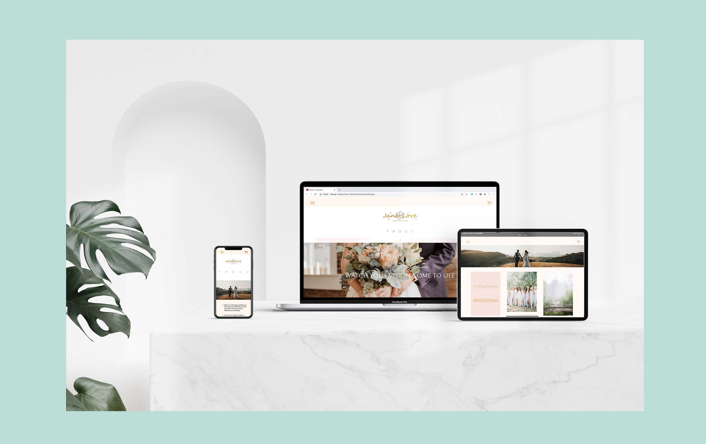

Mood Board

/2020/
In SIAT's Web Design and Development course, which incorporates high expectations on creating a fully functional responsive company website, my team had to design a customized company website accessible for all users. We created a brand new wedding company website named Love & Confetti from scratch.

As a member of a team of three, I was in charge of planning, visual/graphic design, coding, and debugging with my group. In order to deliver a cohesive brand and perfect user experience, I collected wedding images that evoked a lovely and peaceful feeling that I want the website users to experience and then created a mood board to help my teammates understand my inspiration for designing the company website visual art/graphic. The overall warm color tone makes the cold website a sweet and impressive one. After that, I lead my teammate to define and evolve style guides, product lists, company contact information and design elements to clearly communicate design intentions. Our team creates a new Git repository to track work. I am mainly responsible for writing the code of the contact us webpage and part of the homepage/product list webpages. Lead the team to learn and improve the responsive features of all the web pages on our website. In order to design a human-centered service experience, I keep test and debug our website, testing it on multiple devices (mobile phone, tablets, desktop, TVs) and browsers (IE, Chrome, Safari, Firefox) to ensure our website is accessible for all users. I made multiple adjustment until our website gave users the best possible experience.